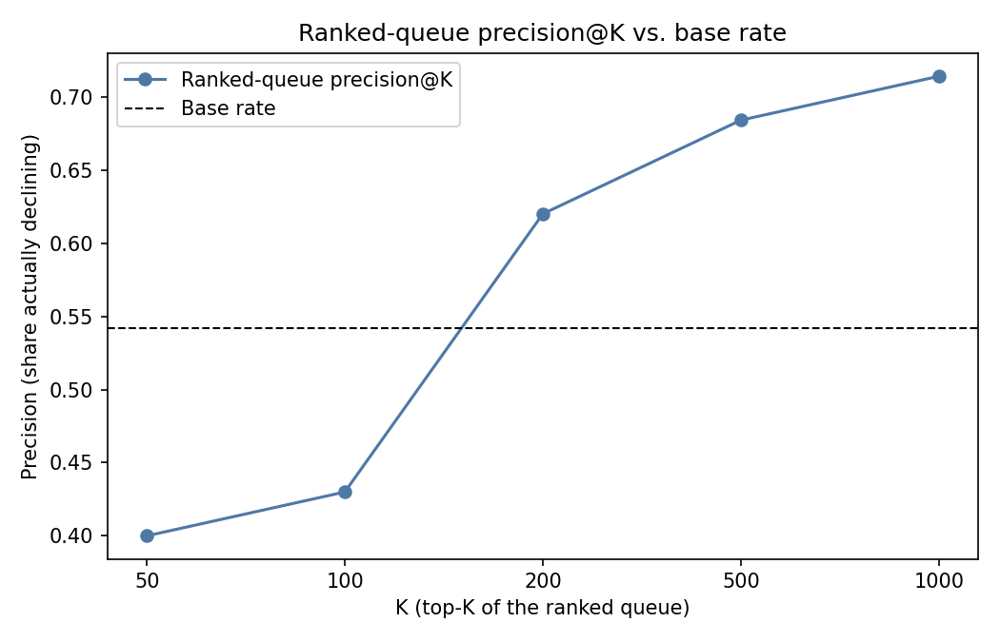
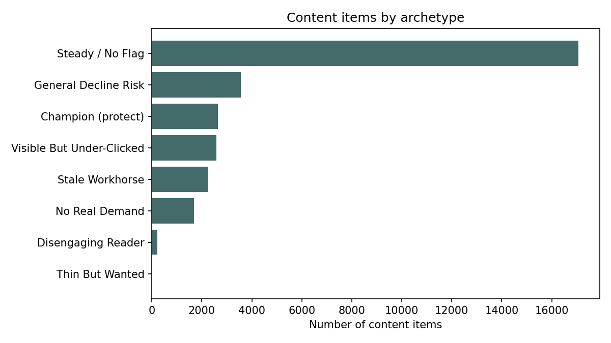
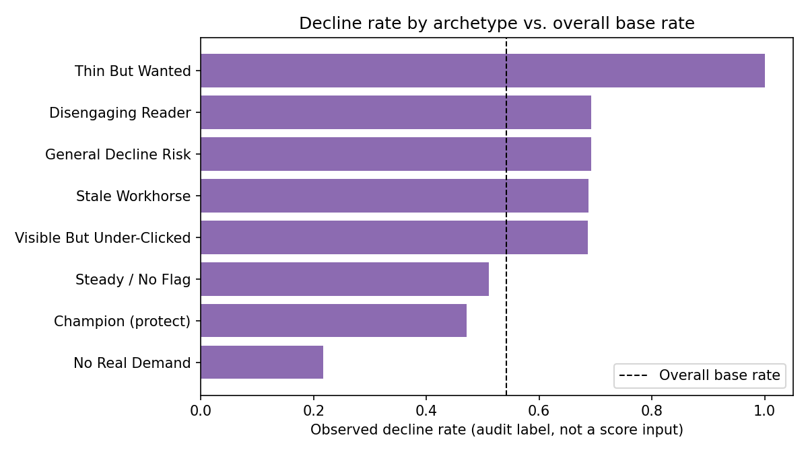

FlyRank ML Internship · Search Intelligence Capstone
A content team managing a few thousand live pages cannot review all of them every week. Someone has to pick which pages get a second look first — and today that pick is usually a hand-written rule ("anything untouched for 90 days") or a gut call.
The cost of getting the pick wrong runs in both directions. Spend a reviewer's morning on a page that was never actually declining, and a genuinely slipping page sits untouched for another month. This capstone asks a narrower, checkable version of that problem: using only observed, page-level search and content signals, can a model rank pages by decline risk better than a transparent rule can — and by how much, once the comparison is made honest?
The deliverable is not a black box. It is a ranked queue with a reason code attached to every row, built so a FlyRank content editor can see why a page was flagged, agree or disagree with the model in seconds, and act — or not — on their own judgment.
This project uses the internship's bundled anonymized starter release,
data/raw/content_refresh_anonymized.csv — 30,000 rows, one row per
pseudonymized content page (content_id), drawn from 32 pseudonymized
clients (client_id). Row counts per client range from 3 to 7,008 — an
unbalanced panel, not a clean sample of "one client, one weight." This is the smaller starter
slice of the internship's data, not the full FlyRank/internship-warehouse release
on Hugging Face (~79M rows, monthly-partitioned); that gated warehouse was not queried for this
paper, and every number below traces back to the 30,000-row slice only.
The performance metrics (impressions, clicks, sessions, CTR, average position, engagement and
scroll rates) are aggregated over a trailing 90-day window ending at export, with
two narrower sub-windows (*_last_30d, *_prev_30d) for trend comparison.
Two lifecycle fields run on a longer, separate clock: content_age_days (90–564 days)
and days_since_last_update (1–373 days). This is a single snapshot —
one row per page, no repeated observations over time — so the data describes the current 90 days,
not a page's full history.
content_id/client_id remain, used for
grouping only, never as model features.trend_direction and trend_pct — these define the
label itself, so they can never also be inputs.impressions_last_30d / _prev_30d and the click/session
equivalents — the trend label is built from exactly these windows; they were used to
define the target, not to predict it.health_score,
needs_ctr_fix, is_quick_win) — intentionally absent from the release,
so this model is built from observable evidence, not a copy of an existing product decision.Missingness is not random: word_count/char_count are complete for
comparison article and feedly article rows but ~28% missing for
keyword article — 90.7% of the dataset by row count. A blind fillna(0) would
silently tell the model "this page has zero words." The fix used throughout is an explicit
has_word_count flag alongside the filled value, so missingness stays visible to the model
instead of being erased.
Framing. This is a ranking problem — which pages first? — scored with
precision@K. The modeled target, is_declining_label, is 1 when
trend_direction == "down" (base rate 0.542 across all 30,000 rows): an observed
label from the data, not an invented rule.
Baseline. A transparent rule, built first and never touching the label:
flag a page when it sits in the 91–180 day staleness tier and the
moderate/good impression tier, score it by impressions_90d,
and rank descending. It is the same "stale + visible" logic behind FlyRank's own refresh flags —
tested first against the audit label (Signal 1: decline rate is 51.1% at 0–30 days vs. 61.1% at
91–180 days) before it was trusted as a baseline.
Features (29 total). Demand fields (search_volume,
competition, cpc), content fields (word_count,
char_count and log-transformed 90-day traffic counts), lifecycle fields
(content_age_days, days_since_last_update), current-state rates
(ctr, avg_position, engagement_rate, scroll_rate,
ai_traffic_pct), and three has_* missingness flags. Explicitly excluded:
trend_direction, trend_pct, every *_last_30d/*_prev_30d
column, plus the ID columns.
Models. Logistic Regression (a readable, coefficient-per-feature start) and
Random Forest (max_depth=8, min_samples_leaf=20 — deliberately shallow,
since 30k rows across only 32 clients invites memorizing client quirks rather than learning a
transferable signal).
Validation design — the part that separates this from a leaderboard number.
Split by client_id with GroupShuffleSplit (75/25, random_state=42),
so every client's pages land entirely in train or entirely in test — zero client overlap. This
matters because 30,000 rows come from just 32 clients: a naive random row split lets the model
partly memorize client-level quirks instead of learning something that generalizes to a brand it
has never seen.
Leakage checks. (1) The 90-day feature windows structurally contain the 30-day
windows the label is built from (100% of rows satisfy
last_30d + prev_30d ≤ 90d; correlation 0.918) — a soft, disclosed risk, not
fatal: dropping every *_90d feature changed grouped AUC by only
-0.008 (0.603 → 0.595). (2) As a sanity check, deliberately adding
trend_pct and the last/prev-30d windows back into the feature set — the columns
the label is directly built from — pushed AUC to a suspicious 1.000, confirming
the leakage-detection method works and that the reported 0.603 is not hiding a similar leak.
(3) No column names in the release match FlyRank's own product-flag naming pattern.
Both models and the baseline were scored on the identical grouped test split — 7,115 pages from 8 clients never seen in training (test base rate 0.517).
| K | Baseline (rule) | Logistic Regression | Random Forest |
|---|---|---|---|
| 10 | 0.60 | 0.90 | 0.40 |
| 20 | 0.45 | 0.80 | 0.55 |
| 50 | 0.38 | 0.74 | 0.54 |
| 100 | 0.32 | 0.71 | 0.56 |
| 200 | 0.44 | 0.67 | 0.565 |
| ROC-AUC | 0.492 | 0.61 | 0.603 |
On this particular grouped split, Logistic Regression edged out Random Forest at every rank depth — a useful, slightly humbling result in its own right (a simple, readable model outperformed a more complex one here). Random Forest was still carried forward as the production scorer for two reasons: the Week-4 signal audit found non-monotonic staleness and impression-tier patterns a linear model can't represent, and a single grouped split is one draw from a 32-client population small enough that model rankings can flip on the next draw. To reduce that single-split noise, the final action queue is scored with 5-fold client-grouped out-of-fold (OOF) predictions from the Random Forest: cross-validated AUC 0.673, fold range 0.602–0.735 — the spread itself is a finding (expect swings this size with only 32 clients, not model instability).

Top Random Forest feature importances: days_with_impressions (0.154),
log_impressions_90d (0.139), avg_position (0.105),
content_age_days (0.089), char_count (0.043), word_count
(0.041). In the Logistic Regression run, the strongest coefficients pointed the same direction
a reviewer would expect: busier pages (log_impressions_90d, positive) skew toward
the "declining" label, while already-winning pages (position_tier_top_3,
impression_tier_excellent, both negative) skew away from it — no single feature
dominated near-perfect probability by itself, the leakage sanity check both models pass.
OOF probabilities plus five transparent, threshold-based reason codes group every page into one of eight named archetypes:


| Archetype | n | Decline rate | Avg. score |
|---|---|---|---|
| Steady / No Flag | 17,062 | 0.511 | 0.507 |
| General Decline Risk | 3,555 | 0.692 | 0.700 |
| Champion (protect) | 2,647 | 0.471 | 0.541 |
| Visible But Under-Clicked | 2,582 | 0.686 | 0.696 |
| Stale Workhorse | 2,254 | 0.687 | 0.702 |
| No Real Demand | 1,678 | 0.217 | 0.295 |
| Disengaging Reader | 221 | 0.692 | 0.701 |
Every row also carries a confidence tier: high confidence requires both a flagged decline risk (probability ≥ 0.65) and real traffic (≥500 impressions, ≥10 sessions) — 3,176 rows (10.6%). Medium confidence covers 18,228 rows (60.8%); low confidence covers 8,596 rows (28.7%) and should not drive a standalone action on its own.
FlyRank/internship-warehouse release —
findings describe this slice and should be treated as a pilot, not a claim about FlyRank's
full content base.Ordered by the combination of observed decline rate and group size — the largest, most reliably-elevated-risk groups first:
Watch for staleness in the model itself: retrain when a new data window
lands or roughly once a quarter (the label is a 30-day trend, a moving target); retrain sooner
if the population shifts meaningfully in content_age_days or
word_count_tier mix, or if a wave of brand-new clients arrives with no training
history — exactly the population this model is weakest on. Between retrains, watch the 5-fold
AUC spread (currently 0.602–0.735); a much wider spread on a future run signals the client
population has outgrown what the model can track.
Every number in this paper traces back to a committed notebook. Run pip install -r
requirements.txt, then work through, in order:
work/notebooks/w04_baseline_score.ipynb — the rule baseline and its
precision@K.work/notebooks/w05_model.ipynb — feature build, grouped split, Logistic
Regression vs. Random Forest vs. baseline (Results, Section 4).work/notebooks/w06_validation_audit.ipynb — the naive-vs-grouped honesty
check and the leakage audit (Section 3).work/notebooks/w07_action_playbook.ipynb — the 5-fold OOF scoring, archetypes,
confidence tiers, and the figures embedded above.work/notebooks/capstone.ipynb — the notebook this paper mirrors end to end.Random seed 42 throughout. All splits are grouped on client_id via
sklearn.model_selection.GroupShuffleSplit / GroupKFold — rerunning
with the same seed reproduces the same client assignment. Full notebook index, environment, and
the reference (unmodified) pipeline in scripts/ are documented in the repo's
work/README.md.
Repository: github.com/TheAlishbahWaheed/flyrank-ml-internship